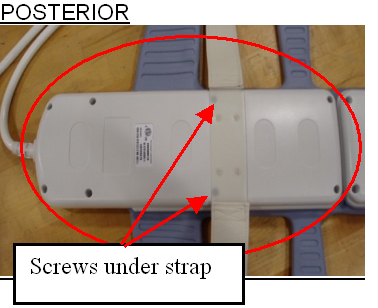
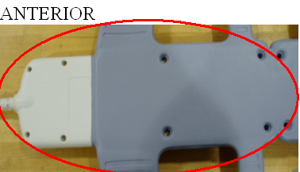
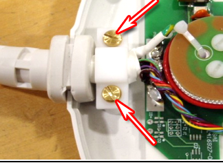
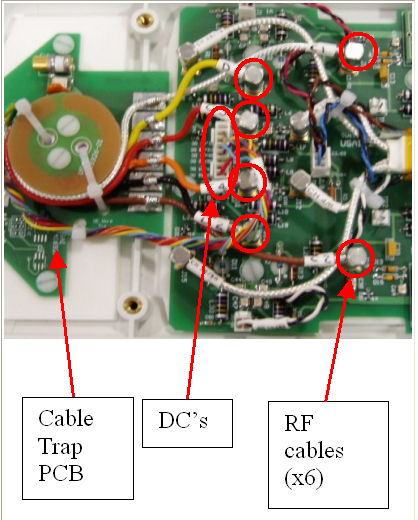
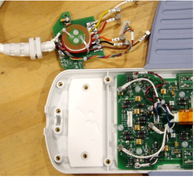
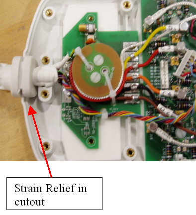

Operating Documentation
Direction 5440001-3, Rev# 6
Signa HDxt Service Methods
Module Version 1.0, Version Date 5/15/07
Operating Documentation |
| Required Persons | Preliminary Reqs | Procedure | Finalization |
|---|---|---|---|
| 1 | Not Applicable | 45 mins | Not Applicable |
Follow this process to change the system cable for coils that have a cable available as a spare part. This process will be the same whether replacing the coil or the cable.
| Item | Qty | Effectivity | Part# | Manufacturer | |
|---|---|---|---|---|---|
| Standard Tool Set | 1 | - | - | - | |
| Item | Qty | Effectivity | Part# | Manufacturer | |
|---|---|---|---|---|---|
| Anterior Cable | 1 | - | 2417329 | - | |
| Posterior Cable | 1 | - | 2417330 | - | |
| ||||
| Observe Anti-Static Precautions | ||||
To Replace the Posterior Output Cable. Illustration 1.
Place posterior coil patient side down.
Remove the 8 screws from the cover at the pelvic end of the coil. There are two screws located under the strap.
Illustration 1: Posterior Coil

To Replace the Anterior Output Cable
Place anterior coil cover side down.
Remove the 8 screws from the cover at the pelvic end of the coil.
Turn the coil over to remove the cover and expose the electronics. Be careful not to lose any of the screws.
Illustration 2: Anterior Coil

| NOTE: | The cable change procedure is the same for both the anterior and posterior coils for the remainder of the steps. |
Unscrew cable clamp. Illustration 3.
Illustration 3: Cable Clamp

Disconnect the cables. Illustration 4.
Locate and disconnect all RF cables coming from the cable trap.
Locate and remove the DC wire bundle coming from the cable trap.
Remove the two screws holding the cable trap PCB to the coil.
Illustration 4: Disconnect The Cables

Remove the cable from the coil. Illustration 5.
Illustration 5: Extracted Cable

Align the new cable and PCB. Illustration 6.
Place strain relief in cut-out.
Align cable trap PCB from the new cable with the screw posts.
Secure the cable trap PCB in place with screws the previously removed nylon screws.
Illustration 6: Cable Alignment

Secure cable clamp over cable until tight with the previously removed brass screws. See Illustration 7.
Illustration 7: Clamp Cable
Reattach Connectors. See Illustration 8.
Attach the DC wire bundle to J1.
Attach the Clear cable at E1 Out.
Attach the Yellow cable to E5 Out.
Attach the Red cable to E3 Out.
Attach the Orange cable to E4 Out.
Attach the Black cable to E6 Out.
Attach the Brown cable to E2 Out.
Illustration 8: Cable Connections
Replace the cover (cover up for the posterior, cover down, patient side up, for the anterior).
Perform a test scan to check coil operations.